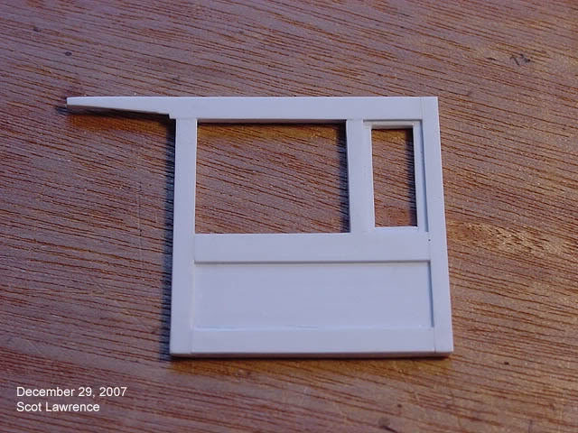
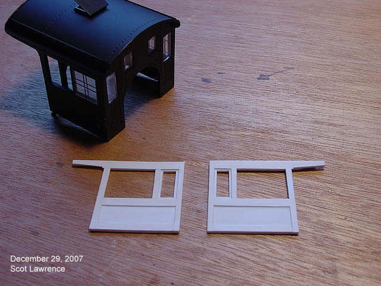
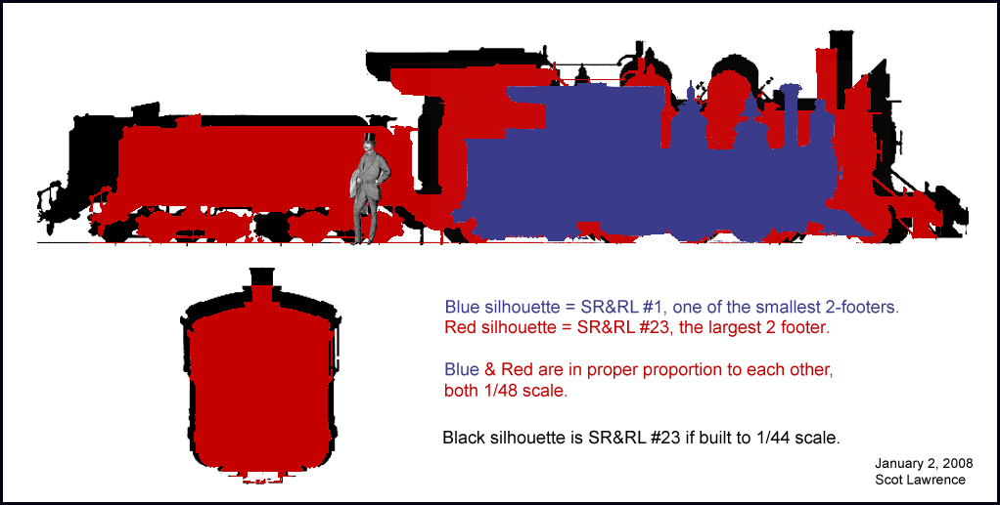
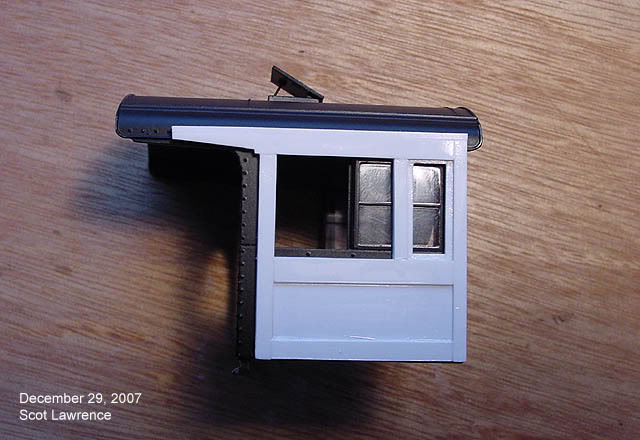
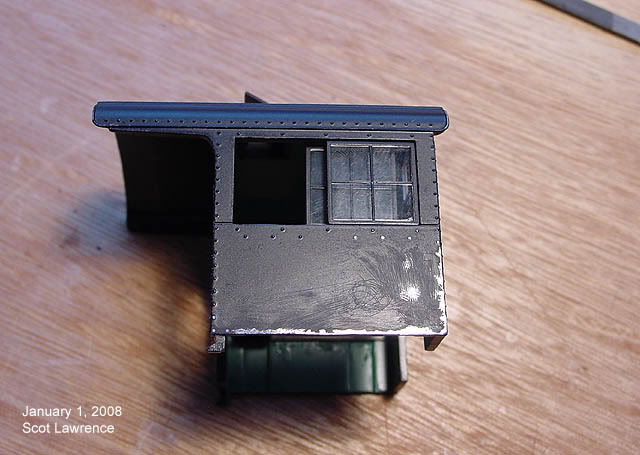

Converting a Bachmann On30
outside frame 2-8-0
into an On2 model of SR&RL
2-6-2 #23.
Converting a Bachmann On30
outside frame 2-8-0
into an On2 model of SR&RL
2-6-2 #23.
| Page 3, work begins on the
cab..
and the whole project changes direction, for the better..I hope! January 2, 2008 I had 11 days off over Christmas! I had determined that the
original On30 2-8-0 cab was simply too large.


Looking pretty good!
I have built one "cab wall" before, for my 1/24 scale "Leviathan":
(which may NEVER be completed..6
years and counting, and still waiting for the drive unit. But the one cab wall was quite a learning experience, and Fletch's masterclass has helped a lot with the building of this new On2 cab..so its all good! or is it?? no, nothing wrong with the cab build, thats fine..but something else isnt quite right..hmmmm.... I have been using the "Crittenden"
drawing of #23 for the project so far..
So I was thinking about how
to fit the oversized 2-8-0 boiler to the correctly scaled 1/48 cab, how
the cab
The boiler and drivers from
the 2-8-0 are slightly too large for #23 in 1/48 scale..I knew this all
along, but was just going to "live with it"...but it will skew the proportions
of the final model somewhat..
So since the boiler and drivers are slightly too large..what if I change the scale slightly until they are the right size?? (Scot makes some new calculations and measurements)...woah! If I change the scale from 1/48 to 1/44 suddenly everything falls into place SO much better! the drivers are the correct size, the boiler is MUCH closer, and even the original cab now fits! The only major problem with
that idea is now the whole engine will be a bit too large..for correct
1/48 scale.
or.. a model of #23 where all the proportions match: cab, boiler, drivers, everything in correct size and proportion to everything else, but the overall mass of the model is a bit too large?? Need to whip up some new drawings: |

| hmmm..1/44
scale would make it a pretty big engine! But number 23 was a pretty big engine to begin with.. will the extra size be too much to accept?? I dont think so.. the overall width and height is not dramatically larger.. the LENGTH is! But unless someone brings their brass Number 23 and sits it next to my larger Number 23, I highly doubt anyone will be able to notice the difference.. Here
is the 1/48 scale cab wall on top of the original 2-8-0 cab..

hmmmm..I
dont know, im still torn..
1.
Correct overall 1/48 scale dimensions..correct overall length, height
and width..but with some incorrect individal componenents, primarily the
boiler and drivers..which will skew the overall "look" of the model..
And there are also two ways of thinking about the finished result if I went with the 1/44 scale idea: 1.
"This is a model of No. 23 in 1/44 scale running on a 1/48 scale On2 layout"
All
the parts are still O-scale..everything should still look fine in a 1/48
scale world..
Oh!
the drawing...turns out I already have a VERY correct drawing of Number
23 in my collection!
still
not sure if I want to go with the 1/44 idea..

thoughts?
Update - February 2008. After
a lot of thought, and discussion on the forums, I have decieded to go with
the "1/44 scale route"..
So
that is going to be the path forward! But
I have also decieded to put Number 23 on hold for awhile!
But
dont worry, I will definately continue with Number 23!
Scot
Lawrence.
|